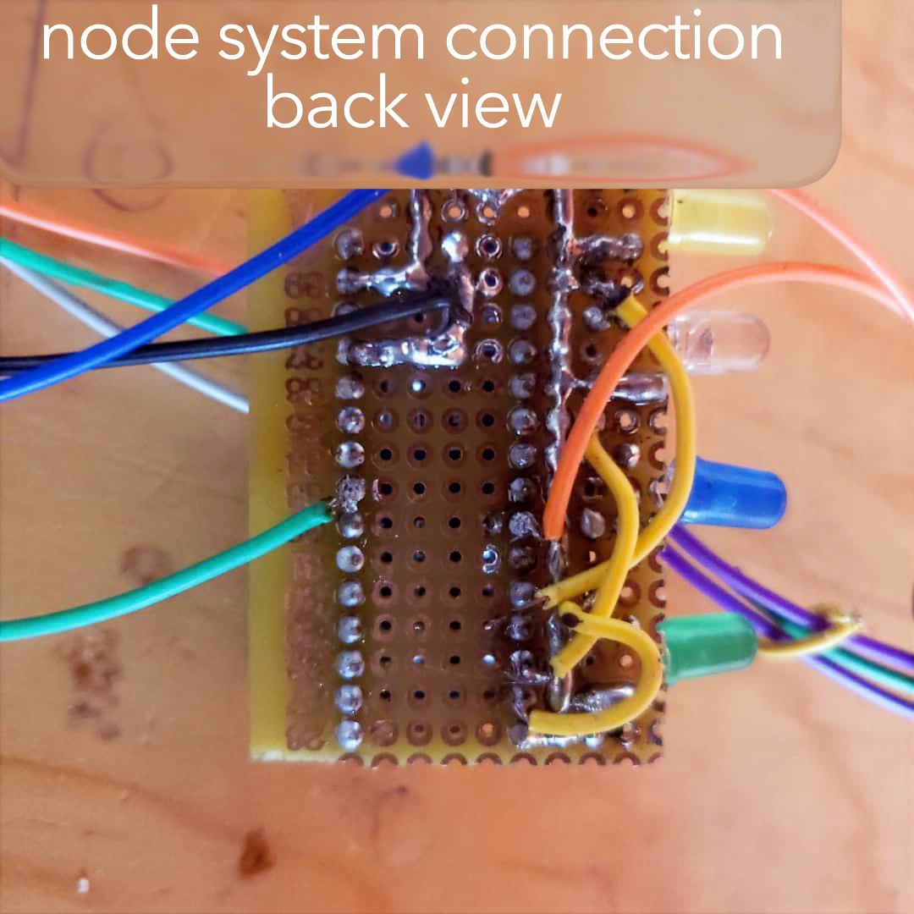
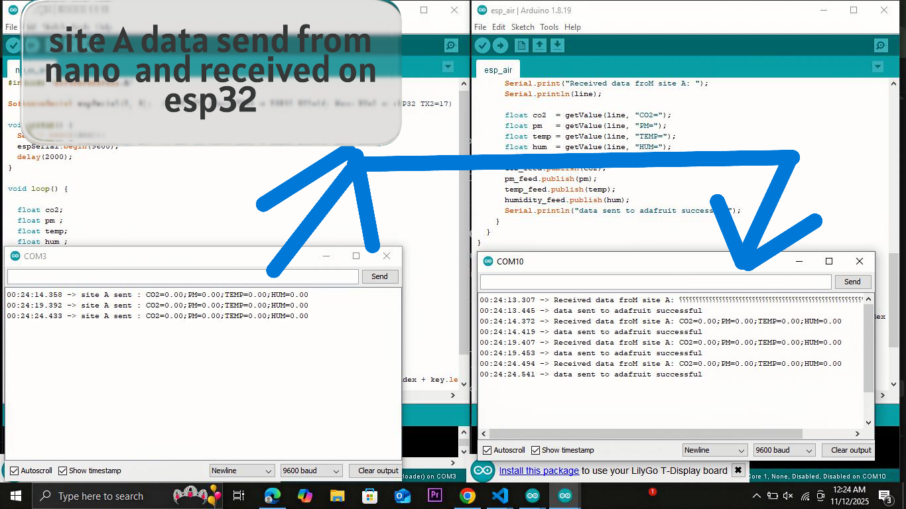
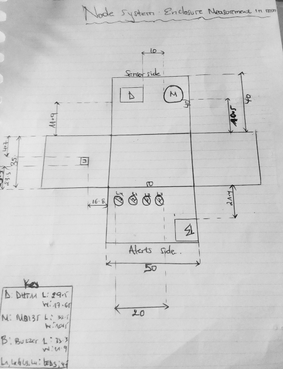
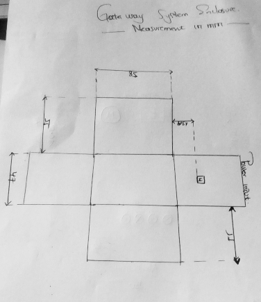
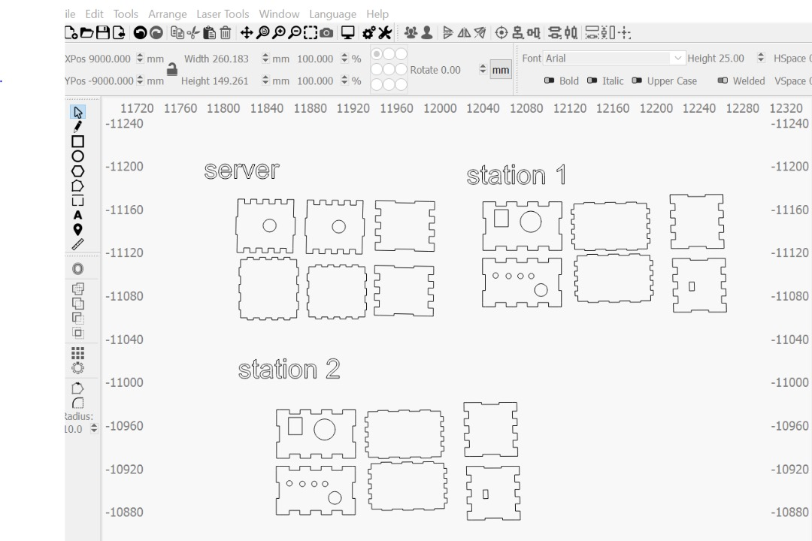

- Hardware Setup: Connect MQ135, DHT22, LEDs, and buzzer to each Arduino Nano node.
here's images that shows how hardware components were connected to provide a functional system
full one node system view

By using soldering techinics we solder node system on compaact bord to ensure system realiability

Node system connection with gate way system requires carefull inspection of serial connection between receive and tansmitter of both system

- Node Programming: Writing Arduino code to read sensors, compare thresholds, control LEDs/buzzer, and send data via UART.
Nodes firmware:
The following are the codes we wrote for each node,
with each node representing a site within the system.
These codes enable the nodes to operate independently, collect and process data,
and communicate seamlessly with the central controller.
#include
SoftwareSerial espSerial(2, 3); // RX, TX (Nano TX=3 → ESP32 RX2=16; Nano RX=2 ← ESP32 TX2=17)
void setup() {
Serial.begin(9600);
espSerial.begin(9600);
delay(2000);
}
void loop() {
// Simulated sensor data
float co2 = random(400, 900);
float pm = random(10, 150);
float temp = random(20, 35);
float hum = random(40, 80);
String message = "CO2=" + String(co2) + ";PM=" + String(pm) +
";TEMP=" + String(temp) + ";HUM=" + String(hum);
espSerial.println(message);
Serial.println("Sent: " + message);
delay(3000);
}
- ESP32 Programming: Writing code to read data from nodes, upload to Adafruit IO, and manage cloud dashboards.
Gateway firm ware:
The following are complete code which enable esp32 to receive data from each node and send it to dash board
#include
#include
#include "Adafruit_MQTT.h"
#include "Adafruit_MQTT_Client.h"
#define WIFI_SSID "xxxxxx"
#define WIFI_PASS "xxxxx"
#define AIO_SERVER "io.adafruit.com"
#define AIO_SERVERPORT 1883
#define AIO_USERNAME "xxxxx"
#define AIO_KEY "xxxxxxx"
// Define Serial2 pins
#define RXD2 16
#define TXD2 17
HardwareSerial Serial2(2); // UART2
// Create WiFi client and MQTT client
WiFiClient client;
Adafruit_MQTT_Client mqtt(&client, AIO_SERVER, AIO_SERVERPORT, AIO_USERNAME, AIO_KEY);
// Feeds
Adafruit_MQTT_Publish co2_feed = Adafruit_MQTT_Publish(&mqtt, AIO_USERNAME "/feeds/co2");
Adafruit_MQTT_Publish pm_feed = Adafruit_MQTT_Publish(&mqtt, AIO_USERNAME "/feeds/pm25");
Adafruit_MQTT_Publish temp_feed = Adafruit_MQTT_Publish(&mqtt, AIO_USERNAME "/feeds/temp");
Adafruit_MQTT_Publish humidity_feed= Adafruit_MQTT_Publish(&mqtt, AIO_USERNAME "/feeds/humidity");
void setup() {
Serial.begin(9600);
Serial2.begin(9600, SERIAL_8N1, RXD2, TXD2);
delay(2000);
Serial.println("Connecting to WiFi...");
WiFi.begin(WIFI_SSID, WIFI_PASS);
while (WiFi.status() != WL_CONNECTED) {
delay(500);
Serial.print(".");
}
Serial.println("\nWiFi Connected!");
}
void loop() {
MQTT_connect();
if (Serial2.available()) {
String line = Serial2.readStringUntil('\n');
line.trim();
if (line.length() > 0) {
Serial.print("Received: ");
Serial.println(line);
float co2 = getValue(line, "CO2=");
float pm = getValue(line, "PM=");
float temp = getValue(line, "TEMP=");
float hum = getValue(line, "HUM=");
co2_feed.publish(co2);
pm_feed.publish(pm);
temp_feed.publish(temp);
humidity_feed.publish(hum);
}
}
}
// ---------- Helper Functions ----------
float getValue(String data, String key) {
int index = data.indexOf(key);
if (index == -1) return 0;
int end = data.indexOf(';', index);
String val = (end == -1) ? data.substring(index + key.length()) : data.substring(index + key.length(), end);
return val.toFloat();
}
void MQTT_connect() {
int8_t ret;
if (mqtt.connected()) return;
Serial.print("Connecting to Adafruit IO... ");
while ((ret = mqtt.connect()) != 0) {
Serial.println(mqtt.connectErrorString(ret));
Serial.println("Retrying MQTT connection in 5 seconds...");
mqtt.disconnect();
delay(5000);
}
Serial.println("MQTT Connected!");
}
- Testing: Verify sensor readings, alerts, UART serial communication, and cloud data visualization.
..To verify sensor reading we have used arduino IDE serial monitor .the following screen shows the serial monitor readings for each verification stage.
i.this image shows how data is sent from node to Gateway.,node is represented as site A, first SERIAL monitor shows data send and time stamp and also second SERIAL monitor shows data received and time stamp

ii.
iii.
iv.this image shows ,
- Deployment: Install nodes in target locations for continuous environmental monitoring.
During deployment phase we started by planning and sketching the enclosures for both parts of the system to ensure proper protection and stability.
This step helped us determine how each component would be safely housed, supported, and organized within the structure.
here's diagrams that shows both system’s enclosure sketch:

Nodes system enclosure sketch

Gateway system enclosure sketch
Here's design of enclosure in light burn software
where server stands for GATE WAY enclosure and station 1&2 stands for NODE enclosure
